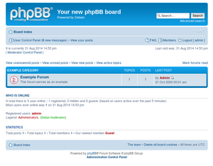

phpBB
Dieser Artikel wurde für die folgenden Ubuntu-Versionen getestet:
Ubuntu 14.04 Trusty Tahr
Artikel für fortgeschrittene Anwender
Dieser Artikel erfordert mehr Erfahrung im Umgang mit Linux und ist daher nur für fortgeschrittene Benutzer gedacht.
Zum Verständnis dieses Artikels sind folgende Seiten hilfreich:
phpBB  ist eine Foren-Anwendung (Bulletin Board), die auf einem Web-Server mit PHP und einer Datenbank läuft. Mit Hilfe der Software lässt sich recht einfach ein Internetforum erstellen. Für nähere Informationen zu phpBB sei auf den entsprechenden Beitrag in der Wikipedia verwiesen.
ist eine Foren-Anwendung (Bulletin Board), die auf einem Web-Server mit PHP und einer Datenbank läuft. Mit Hilfe der Software lässt sich recht einfach ein Internetforum erstellen. Für nähere Informationen zu phpBB sei auf den entsprechenden Beitrag in der Wikipedia verwiesen.
Voraussetzungen¶
phpBB benötigt eine Reihe von Voraussetzungen: Auf dem Rechner müssen ein Webserver, die Skriptsprache PHP und eine von phpBB unterstützte Datenbank installiert sein. phpBB benötigt nicht unbedingt den populären Apache als Webserver. Kleine und schlanke Alternativen wie Lighty funktionieren auch, sofern die angegebenen Anforderungen erfüllt sind. Die Datenbank kann auf einem separaten Rechner betrieben werden. In diesem Beispiel wird jedoch davon ausgegangen, dass alle Komponenten auf einem Rechner laufen und Apache als Webserver eingesetzt wird.
Installation¶
Manuell¶
Die bevorzugte Variante zur Installation von phpBB sollte die manuelle Installation sein. Dazu muss phpBB als Archiv heruntergeladen werden. Man bekommt entweder die englische Originalversion von der offiziellen Downloadseite  des Projekts, welche man mit einem deutschen Sprachpaket eindeutschen muss, oder eine Version mit bereits integriertem deutschen Sprachpaket von der Downloadseite der offiziellen deutschen Hilfs-Seite
des Projekts, welche man mit einem deutschen Sprachpaket eindeutschen muss, oder eine Version mit bereits integriertem deutschen Sprachpaket von der Downloadseite der offiziellen deutschen Hilfs-Seite  .
.
Dieses Archiv entpackt [3] man dann in das gewünschte Verzeichnis seines Webserver-Basisverzeichnisses (oder in ein beliebiges anderes Verzeichnis unter Verwendung eines virtuellen Hosts). Weiterhin muss als Vorbereitung im gewünschten Datenbanksystem eine leere Datenbank angelegt werden.
Sind die Vorbereitungen abgeschlossen, muss in einem Browser das Verzeichnis, in welches phpBB entpackt wurde, (bspw. über http://localhost/phpBB) aufgerufen werden um die Installation zu starten. Genauere Beschreibungen zum weiteren Installationsvorgang bietet das phpBB-Handbuch .
Aus den offiziellen Paketquellen¶
Neben der manuellen Installation steht in den offiziellen Paketquellen auch ein Paket für phpBB bereit.
Experten-Info:
Obwohl die Einstiegshürde hier wesentlich geringer ist, sollte auf einem Produktivsystem, welches aus dem Internet erreichbar ist, auf die Verwendung dieses Pakets verzichtet werden. Es befindet sich lediglich in der Sektion universe und wird deshalb nicht offiziell unterstützt bzw. gepflegt. Des Weiteren ist die Version in den Paketquellen aus diesem Grund in der Regel veraltet und enthält im schlechtesten Fall nicht behobene Sicherheitslücken!
Weitere Vorteile der manuellen Installation sind:
Es können auch andere Datenbank-Systeme als MySQL verwendet werden.
Es können auch andere Webserver als Apache verwendet werden.
Anpassungen am Forum werden bei einem eventuellen Update des Pakets nicht wieder mit den Originaldateien überschrieben.
Für ein kurzes Reinschnuppern auf einem lokalen Testsystem kann dieses Paket aber verwendet werden. Man kann es über
phpbb3 (universe)
 mit apturl
mit apturl
Paketliste zum Kopieren:
sudo apt-get install phpbb3
sudo aptitude install phpbb3
installieren [1], wobei hier allerdings Apache und MySQL als Abhängigkeiten konfiguriert sind und deshalb mitinstalliert und im Anschluss auch von phpBB benutzt werden.
Forum aktivieren¶
 Nach Beendigung der Installation kann das Forum in einem Browser durch die Eingabe folgender Adresse aufgerufen werden:
http://localhost/phpbb
Das Forum ist anfangs deaktiviert. Um das Forum zu konfigurieren, muss man sich als Administrator über den Link "Log in" in das Forum einloggen. Die Vorgabewerte für den Nutzernamen und das Passwort des Administrators lauten:
"Benutzername":
admin"Passwort":
admin
Hinweis:
Bei der Installation aus den offiziellen Paketquellen wird das Passwort des Foren-Administrators während der Installation abgefragt. In diesem Fall ist zum Login natürlich das dort vergebene Passwort einzugeben.
Nachdem man sich als Administrator eingeloggt hat, findet sich unten auf der Seite ein kleiner Link "Administration Control Panel", über den das Konfigurationsmenü aufgerufen werden kann. Die Option zum Aktivieren des Forums findet sich unter "General -> Board settings". Außerdem sollte man nicht vergessen, das Admin-Passwort zu ändern (falls es während der Installation nicht personalisiert wurde).
Deutsches Sprachpaket installieren¶
Wenn man die englische Originalversion oder die Version aus den Ubuntu-Paketquellen verwendet, dann muss ein Sprachpaket installiert werden, wenn man sein Forum in einer anderen Sprache als englisch verwenden möchte.
Aus den Paketquellen¶
phpbb3-l10n (universe)
mit apturl
Paketliste zum Kopieren:
sudo apt-get install phpbb3-l10n
sudo aptitude install phpbb3-l10n
Manuelle Installation¶
Für eine manuelle Installation des Sprachpakets lädt man sich zuerst das entsprechende Sprachpaket von phpbb.com herunter und installiert es wie folgt:
Bei einer manuellen Installation entpackt [3] man das Archiv mit Root-Rechten in das phpBB-Basisverzeichnis, so dass sich die enthaltenen Verzeichnisse language und styles in die vorhandenen Verzeichnisse integrieren.
Bei der Installation aus den offiziellen Paketquellen muss das im Archiv enthaltene Verzeichnis language in das Verzeichnis /usr/share/phpbb3/www/language und das Verzeichnis styles in das Verzeichnis /usr/share/phpbb3/styles integriert werden.
Nach der Installation kann man dann unter "Administration Control Panel -> System -> Language packs" das Sprachpaket installieren lassen und bei Bedarf unter "General -> Board settings" Deutsch als Standardsprache einstellen.
Links¶
phpBB Homepage
- Offizielle Internetpräsenz phpBB Forum
- Offizielle deutschsprachige phpBB-Hilfe phpBB - Wikipedia
- Erstellt mit Inyoka
-
 2004 – 2017 ubuntuusers.de • Einige Rechte vorbehalten
2004 – 2017 ubuntuusers.de • Einige Rechte vorbehalten
Lizenz • Kontakt • Datenschutz • Impressum • Serverstatus -
Serverhousing gespendet von